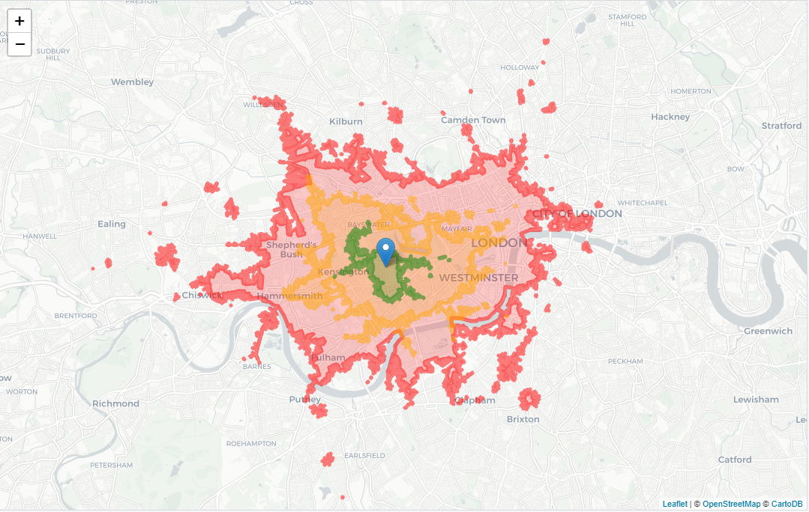
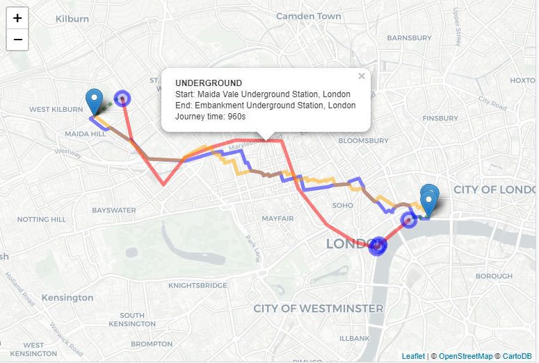
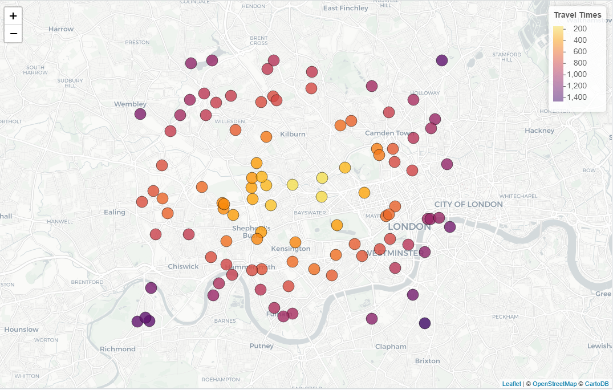

The goal of TargomoR is to provide an interface to the Targomo API for users of leaflet in R.
This package is being developed with the permission of Targomo, but is NOT AN OFFICIAL PRODUCT. For more information about Targomo, please see their website.
Please also be aware of the Targomo Terms and Conditions.
See below for information on installing the package, setting up your environment correctly, and using the package.
TargomoR is not yet on CRAN. To install this development version from GitHub please use:
The functions in TargomoR all rely on having a Targomo API Key. To get yours, please sign up with Targomo.
You’ll also need to know what region of the world to use. For example if you’re looking for travel-time information in Germany, your region is “westcentraleurope”. Find your region. In the examples on this page the region is “britishisles”.
You can pass these variables to each function manually if you like, but to avoid this, the functions will default to use the TARGOMO_API_KEY and TARGOMO_REGION environment variables respectively.
To take advantage of this, you can set these variables in an .Renviron file. Use the following snippet to write the variables to the file.
setTargomoVariables(api_key = "<YOUR KEY>", region = "<YOUR REGION>",
global = FALSE)
# global = TRUE will write to .Renviron at Sys.getenv("HOME")
# global = FALSE will write to .Renviron at getwd()Restart R for these variables to take effect.
You’re now ready to use Targomo to get travel-time and routing data. There are three services currently supported:
The reachability service is referred to here as the time service.
For each service there are 2 core functions:
getTargomo{service} - returns an sf object containing the requested data.addTargomo{service} - adds the polygons/routes/times to a leaflet map.The add* functions are provided as a convenience - feel free to create your own drawing functions to put the data onto a map!
Each service requires basic inputs (alongside the API key and region):
targomoOptions(). This is designed to feel familiar to users of leaflet with functions like labelOptions and popupOptions.Sources and targets are defined either by data.frame-like objects (including classes exported from the sf package) or by vectors of longitude and latitude coordinates. Again the syntax should feel familiar to leaflet users.
For example, we could define two data frames as so:
Additional optional arguments are:
verbose - FALSE by default. Should the call to the API be printed? Helpful for debugging.progress - FALSE by default. Should the call mark progress with a progress bar? Helpful for when connections are slow or the call is large (many sources/targets).The return value of the getTargomo{service} functions varies by service. In all cases, spatial data is returned in CRS 4326.
For the isochrone polygon service, getTargomoPolygons returns a Simple Feature Collection of 2 fields. The fields are:
Each feature is a POLYGON (or MULTIPOLYGON). There is one feature per time specified in the travelTimes argument of targomoOptions - see options below.
polygons <- getTargomoPolygons(source_data = source_data,
source_lat = ~lat, source_lng = ~lng,
options = targomoOptions(travelType = "bike"))
polygons#> Simple feature collection with 3 features and 2 fields
#> geometry type: MULTIPOLYGON
#> dimension: XY
#> bbox: xmin: -0.2856 ymin: 51.46 xmax: -0.0912 ymax: 51.58
#> epsg (SRID): 4326
#> proj4string: +proj=longlat +datum=WGS84 +no_defs
#> time area geometry
#> 2 1800 115525269 MULTIPOLYGON (((-0.2662 51....
#> 3 1200 48835950 MULTIPOLYGON (((-0.2344 51....
#> 1 600 10829611 MULTIPOLYGON (((-0.2151 51....Using the addTargomoPolygons function we can add them directly to a leaflet map:

For the routing service, getTargomoRoutes returns a named nested list. The names are the travel modes given in the travelType option (specifying multiple modes will make multiple calls to the API).
Within each travel mode is a list of the returned routes - one for each source/target combination where a route has been found. Each route is a data.frame, containing the source and target IDs, and a features data.frame of a simple feature collection (class ‘sf’). This contains:
Each SFC also contains fields giving the start and end names of the LINESTRINGs, the length of time the section takes and the distance in metres.
For example, for three routes by bike, the output will look like:
routes <- getTargomoRoutes(source_data = source_data, target_data = target_data,
source_lat = ~lat, source_lng = ~lng,
target_lat = ~lat, target_lng = ~lng,
source_id = ~id, target_id = ~id,
options = targomoOptions(travelType = "bike"))
str(routes, max.level = 3, give.attr = FALSE)#> List of 1
#> $ bike:List of 3
#> ..$ :Classes 'tbl_df', 'tbl' and 'data.frame': 3 obs. of 3 variables:
#> .. ..$ sourceId: chr [1:3] "A" "A" "A"
#> .. ..$ targetId: chr [1:3] "X" "X" "X"
#> .. ..$ features:Classes 'sf' and 'data.frame': 3 obs. of 9 variables:
#> ..$ :Classes 'tbl_df', 'tbl' and 'data.frame': 3 obs. of 3 variables:
#> .. ..$ sourceId: chr [1:3] "A" "A" "A"
#> .. ..$ targetId: chr [1:3] "Y" "Y" "Y"
#> .. ..$ features:Classes 'sf' and 'data.frame': 3 obs. of 9 variables:
#> ..$ :Classes 'tbl_df', 'tbl' and 'data.frame': 3 obs. of 3 variables:
#> .. ..$ sourceId: chr [1:3] "A" "A" "A"
#> .. ..$ targetId: chr [1:3] "Z" "Z" "Z"
#> .. ..$ features:Classes 'sf' and 'data.frame': 3 obs. of 9 variables:The features object for the first route will look like:
routes$bike[[1]]$features
#> Simple feature collection with 3 features and 8 fields
#> geometry type: GEOMETRY
#> dimension: XY
#> bbox: xmin: -0.19 ymin: 51.5 xmax: -0.18 ymax: 51.52
#> epsg (SRID): 4326
#> proj4string: +proj=longlat +datum=WGS84 +no_defs
#> endName sourceId length targetId startName travelTime
#> 1 target <NA> 2586 <NA> source 624
#> 2 <NA> <NA> NA X <NA> NA
#> 3 <NA> A NA <NA> <NA> NA
#> geometry travelType name
#> 1 LINESTRING (-0.18 51.5, -0.... BIKE <NA>
#> 2 POINT (-0.18 51.5) <NA> Target
#> 3 POINT (-0.19 51.52) <NA> SourceUsing addTargomoRoutes we can draw these routes nicely on the map. For example:

For the time service, getTargomoTimes returns a Simple Feature Collection of 4 fields. Each feature is a POINT (corresponding to the target point), and the fields are:
times <- getTargomoTimes(source_data = source_data, target_data = target_data,
source_lat = ~lat, source_lng = ~lng,
target_lat = ~lat, target_lng = ~lng,
source_id = ~id, target_id = ~id,
options = targomoOptions(travelType = "bike"))
times#> Simple feature collection with 3 features and 4 fields
#> geometry type: POINT
#> dimension: XY
#> bbox: xmin: -0.185 ymin: 51.5 xmax: -0.17 ymax: 51.52
#> epsg (SRID): 4326
#> proj4string: +proj=longlat +datum=WGS84 +no_defs
#> # A tibble: 3 x 5
#> sourceId targetId travelType travelTime geometry
#> <chr> <chr> <chr> <int> <POINT [°]>
#> 1 A X bike 624 (-0.18 51.5)
#> 2 A Y bike 183 (-0.185 51.52)
#> 3 A Z bike 460 (-0.17 51.51)We can add time data directly to the map with addTargomoTimes:

There are 2 different types of options - core options to pass to the API, and drawing options to change how the result set is mapped (only used in the add* functions).
To change the options passed to the API, you use the targomoOptions function within a getTargomo{service} call. Options are documented in the manual pages (use ?targomoOptions).
Each service has a drawing options function to customise how the features appear on the map. These should be used with the drawOptions argument to addTargomo{service}:
polygonDrawOptions()
routeDrawOptions()
timeDrawOptions()
These are also all documented in the manual pages (e.g. ?routeDrawOptions).
It’s a condition of use of the Targomo services that you attribute the travel time data to them. Full details can be found on their attributions page. To help with this there are two functions in TargomoR:
attributionLink - just returns the URL of the attributions pageaddTargomoAttribution - adds the attribution iframe to a leaflet control, for use with leaflet maps.It is your responsibility to make sure you comply with the attribution requirements appropriate to your plan.
Please note that the ‘TargomoR’ project is released with a Contributor Code of Conduct. By contributing to this project, you agree to abide by its terms.